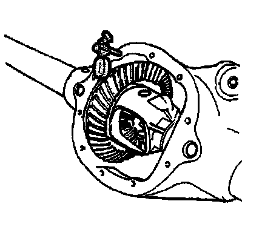
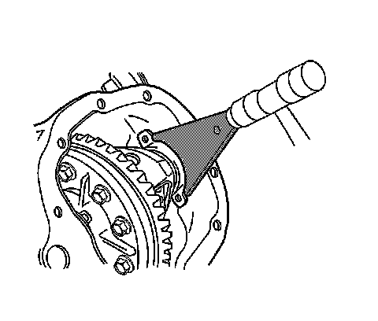

Backlash Adjustment (8.6 Inch Axle)
Backlash Adjustment (8.6 Inch Axle)
Tools Required
^ J 8001 Dial Indicator Set
^ J 25025 Guide Pins
^ J 25588 Side Bearing Shim Installer

1. Install the J 25025-1 and the J 8001 to the axle housing as shown.
2. Place the indicator stem of the J 8001-3 at the heel end of a gear tooth.
3. Set the J 8001-3 so that the stem is aligned with the gear rotation and perpendicular to the tooth angle.
4. Preload the dial of the J 8001-3.
Align the needle and the dial face of the J 8001-3 to ZERO.
5. While holding the drive pinion stationary, move the ring gear back and forth.
Measure and record the backlash.
6. Repeat the measuring procedure at eight points around the ring gear.
The difference between the backlash at all of the measuring points should not vary by more than 0.05 mm (0.002 in).
7. If the difference between the backlash at all of the measuring points varies by more than 0.05 mm (0.002 in), inspect for the following conditions:
^ Burrs
^ A distorted case flange
^ Uneven bolting
8. If the difference between all the measuring points is within specifications, the backlash at the minimum lash point measured should be:
The backlash between the ring gear and the drive pinion should be between 0.08-0.25 mm (0.003-0.010 in) with a preferred backlash of 0.13-0.18 mm (0.005-0.007 in).
Important:
^ Do not use the original cast iron production shims to adjust the backlash. Use service shims and spacers instead.
^ Adjust the thickness of the shim pack on each side of the differential in equal amounts. This will maintain the correct axle side bearing preload.
^ Moving 0.05 mm (0.002 in) of shim thickness from one side of the differential to the other will change the backlash adjustment approximately 0.03 mm (0.001 in).
If the backlash is too small, increase the backlash using the following procedure:
1. Remove the bearing cap bolts and the bearing caps.
Mark the bearing caps left or right.
2. Remove the differential case assembly with the bearing cups and the shims.
Mark the bearing cups and the shims left or right.
3. Measure the thickness of left side shim pack.
Measure the production shim or the shim and service spacer in 3 locations.
Measure each shim separately.
4. Calculate the average of the 3 measurements for each shim.
Add the average of each of the shim measurements together.
Record the measurement. This is the thickness for the left side shim pack.
5. Assemble a new left side shim pack by decreasing the appropriate amount of thickness from the original left side shim pack. If the original shim is cast iron production shim, assemble the shim pack using a service spacer and service shims. For example, to increase the backlash by 0.05 mm (0.002 in), remove 0.10 mm (0.004 in) of thickness from the left side shim pack.
6. Measure the thickness of right side shim pack.
Measure the shim or the shim and service spacer in 3 locations.
Measure each shim separately.
7. Calculate the average of the 3 measurements for each shim.
Add the average of each of the shim measurements together.
Record the measurement. This is the thickness for the right side shim pack.
8. Assemble a new right side shim pack by increasing the appropriate amount of thickness to the original right side shim pack. If the original shim is cast iron production shim, assemble the shim pack using a service spacer and service shims. For example, to increase the backlash by 0.05 mm (0.002 in), add 0.10 mm (0.004 in) of thickness to the right side shim pack.
9. If the backlash is too large, decrease the backlash using the following procedure:
1. Remove the bearing cap bolts and the bearing caps.
Mark the bearing caps left or right.
2. Remove the differential case assembly with the bearing cups and the shims.
Mark the bearing cups and the shims left or right.
3. Measure the thickness of left side shim pack.
Measure the production shim or the shim and service spacer in 3 locations.
Measure each shim separately.
4. Calculate the average of the 3 measurements for each shim.
Add the average of each of the shim measurements together.
Record the measurement. This is the thickness for the left side shim pack.
5. Assemble a new left side shim pack by increasing the appropriate amount of thickness to the original left side shim pack. If the original shim is cast iron production shim, assemble the shim pack using a service spacer and service shims. For example, to increase the backlash by 0.05 mm (0.002 in), add 0.10 mm (0.004 in) of thickness to the left side shim pack.
6. Measure the thickness of right side shim pack.
Measure the shim or the shim and service spacer in 3 locations.
Measure each shim separately.
7. Calculate the average of the 3 measurements for each shim.
Add the average of each of the shim measurements together.
Record the measurement. This is the thickness for the right side shim pack.
8. Assemble a new right side shim pack by decreasing the appropriate amount of thickness to the original right side shim pack. If the original shim is cast iron production shim, assemble the shim pack using a service spacer and service shims. For example, to decrease the backlash by 0.05 mm (0.002 in), remove 0.10 mm (0.004 in) of thickness to the right side shim pack.
10. Install the differential case assembly with the bearing cups.
11. Install the left side service spacer between the axle housing and the differential case.
12. Install the right side service spacer between the axle housing and the differential case.

13. Install the left side service shim or shims using the J 25588, if necessary.
The service shim or shims must be installed between the service spacer and the differential bearing cup.
14. Install the right side service shim or shims using the J 25588, if necessary.
The service shim or shims must be installed between the service spacer and the differential bearing cup.
Notice: Refer to Fastener Notice.
15. Install the bearing caps and bolts.
Tighten the bolts to 75 Nm (55 lb ft).
16. Recheck the backlash and adjust, if necessary.
17. Once backlash is correct, perform a gear tooth contact pattern check in order to ensure proper alignment between the ring and pinion gears. Refer to Gear Tooth Contact Pattern Inspection.